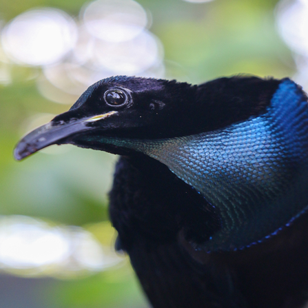

Aves del paraíso
Son famosas por sus plumajes espectaculares y sus sorprendentes rituales de cortejo. Los machos pueden realizar movimientos, saltos y posturas extremadamente elaboradas para llamar la atención de las hembras.
- Destacan por sus plumajes coloridos y sus elaboradas danzas de cortejo.
- Ejemplos: ave del paraíso soberbia y ave del paraíso de Wilson.
Dato curioso:
algunas especies pueden modificar la apariencia de sus
plumas durante el cortejo para crear formas y colores
impresionantes.
